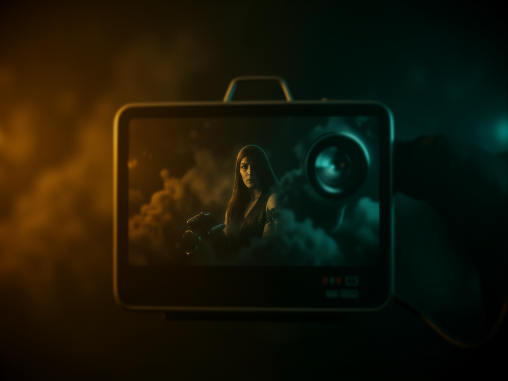

Tú proporcionas la URL. Claude Code navega la app de verdad, captura las pantallas reales paso a paso y crea un video con marco de navegador, cursor animado y narración. Todo en la máquina, sin clave de API.

No es motion graphics que explica un concepto (eso es la skill video-explicativo): aquí las pantallas del video son tu app, capturadas de verdad con navegador automatizado. El resultado es un walkthrough en PT-BR de 35–50s, 16:9, que termina en la CTA de INEMA.CLUB.
En la captura, la skill toma la cuadro delimitador real de cada objetivo con getBoundingClientRect. El cursor animado cae en el centro del control, con pulse y ripple al hacer clic. Eso es lo que hace que parezca una grabación profesional y no una captura con una flecha encima.
Captura mediante agent-browser (Playwright), render HTML→MP4 vía HyperFrames, narración PT-BR mediante TTS Kokoro (voz pf_dora) ejecutándose en la propia máquina. Ninguna llamada paga ni servicio externo.
El generador lee el steps.json y mide la duración de cada WAV con ffprobe. No hay una tabla de tiempos manual: el audio y la animación nacen sincronizados, y los loops de ambiente no dejan una cola silenciosa al final.
El render de HyperFrames es determinista: no hay red durante la renderización. Por eso el sitio nunca se carga en vivo dentro del video: primero se capturan las capturas de pantalla reales y después se anima encima. El viewport fijo de la captura se convierte en el espacio de coordenadas al que apunta el cursor.
5–8 pasos + CTA (≈35–50s). Cada frase tiene dos formas: pantalla (PT-BR acentuado, botones de la app en la grafía original — Generate, Upload) e habla (números expandidos e inglés reescrito fonéticamente — upload → «subida»). La revisión se hace antes de capturar y narrar.
O capture.mjs lee un actions.json, dirige el agent-browser desde la app, toma 1 captura de pantalla por estado y registra el cuadro delimitador de cada objetivo. Resultado: assets/shots/*.png + steps.json. Se puede hacer manualmente cuando la app es impredecible (login, estados dinámicos).
O build-demo.mjs lee el steps.json, mide los WAV y arma el marco del navegador + cursor global + resaltado + zoom en el resultado + CTA. Después: lint, inspect, borrador para revisar los frames y render final en high / 30fps.
La skill es autocontenida (ya incluye las fuentes en assets/fonts/) y no depende de ningún otro proyecto. Solo necesita el runtime local y la app objetivo en funcionamiento.
Base de HyperFrames (render HTML→MP4) y de ffprobe, que mide las duraciones de la narración.
node --version # debe ser 22+ ffmpeg -version
Navegador headless usado para el render. Se descarga una vez y queda en caché.
npx hyperframes browser ensureNarración local, voz pf_dora. La primera ejecución descarga ~340MB de modelo.
pip install kokoro-onnx soundfileSkill de navegación (Playwright) que ejecuta las acciones y toma las capturas de pantalla reales.
agent-browser set viewport 1280 800La URL debe responder durante la captura — localhost o público. Una app con inicio de sesión requiere credenciales de prueba.
# ej.: tu app sirviendo en http://localhost:8000/
Copia skills/video-demonstrativo/ de este repo para tus skills de Claude Code.
cp -r skills/video-demonstrativo \ ~/.claude/skills/
En la práctica, le pides el video a Claude Code y este guía el flujo. Abajo, lo que sucede por dentro: los comandos reales, en el orden en que los ejecuta la skill.
La lista de acciones que se mostrarán, con 1 frase de narración por paso. Arco: abrir la app → acción 1 → acción 2 → … → resultado → CTA. El 1.º paso es la pantalla inicial (intro:true); el último de contenido es el resultado (zoom:true).
# 5–8 pasos + CTA ≈ 35–50s de video # ej.: escribir prompt → elegir 512² → ajustar altura → Generar → guardar
Revisa la acentuación PT-BR palabra por palabra. Define las dos formas de cada frase: pantalla (caption + labels, inglés en la grafía original) y habla (txt/sN.txt, inglés fonéticamente). Kokoro fonemiza según la grafía escrita: un acento incorrecto contamina la pantalla y la locución.
# pantalla: "2 · Elige el tamaño — 512²" (Generate, Upload en la grafía original) # dice: "Después, elige el tamaño. Vamos con quinientos doce." # léxico inglés→ES: upload→aploud · deploy→desplói · Generate→djénereit
Describe la URL, el viewport y los pasos en un actions.json; el script abre la app, ejecuta cada acción, toma una captura del estado y obtiene el bounding box real del objetivo. Acciones: fill, click, clickText, setValue, wait.
node capture.mjs actions.json # -> assets/shots/*.png + steps.json # o manualmente, cuando la app es impredecible (login, estado dinámico): agent-browser set viewport 1280 800 agent-browser open http://localhost:8000/ agent-browser snapshot -i # descubre refs @e1, @e2... agent-browser fill @e6 "texto" agent-browser screenshot assets/shots/01-prompt.png
Todo vive en una única carpeta en ~/projetos/output/<nome>/: proyecto, capturas, audios, index.html y el MP4 final. Copia las fuentes integradas en la skill (o ejecuta el fetch-fonts.mjs) — sin CDN en el render.
cd ~/projetos/output npx hyperframes init <nome> --example blank --non-interactive # fuentes: copia assets/fonts/ de la skill, o: node fetch-fonts.mjs
La plantilla lee el steps.json, escribe assets/txt/sN.txt (1 por paso + CTA, ya en la forma hablada revisada) y genera los WAV. Al final imprime la duración de cada pista.
bash narration-template.sh # -> assets/txt/sN.txt + assets/audio/sN.wav # por debajo, pista por pista: npx hyperframes tts assets/txt/s1.txt --voice pf_dora --speed 0.98 --output assets/audio/s1.wav
Copia scripts/composition-template.mjs cómo build-demo.mjs. Lee el steps.json y mide los WAV con ffprobe — ya vienen listas la ventana del navegador, el cursor global animado, el resaltado, el zoom en el resultado y el CTA de INEMA.CLUB.
cp ~/.claude/skills/video-demonstrativo/scripts/composition-template.mjs build-demo.mjs node build-demo.mjs # -> index.html (16:9). No editar a mano.
Meta: 0 errores en el lint y 0 problemas en el inspect. Anima el .scene-inner (nunca el wrapper .clip), escenas y captions en tracks alternados, decorativos y marco con data-layout-ignore.
npx hyperframes lint # 0 errores npx hyperframes inspect --samples 14 # 0 problemas
Primero, un borrador: extrae 1 frame por paso y muéstraselo al usuario; tú no escuchas el audio, así que él valida la locución. Una vez aprobado, pasa al render final. El MP4 queda en la raíz del propio proyecto.
# comprueba npx hyperframes render --quality draft ffmpeg -nostdin -y -ss 12 -i video.mp4 -vframes 1 -update 1 frame.png # final npx hyperframes render --quality high --fps 30 --output <nome>-16x9.mp4
O actions.json es la entrada de la captura; el steps.json es lo que sale de ella y alimenta la composición. Ejemplos completos en scripts/actions.example.json e scripts/steps.example.json — el caso de referencia es un recorrido de inemaimg (playground de generación de imágenes) generando una imagen desde cero.
Describes la acción y el objetivo del cursor. El script resuelve el resto.
{
"url": "http://localhost:8000/",
"viewport": [1280, 800],
"window": { "urlLabel": "localhost:8000" },
"steps": [{
"id": "size",
"do": { "type": "clickText", "tag": "button", "text": "512²" },
"target": { "tag": "button", "text": "512²" },
"click": true,
"caption": "2 · Escolha o tamanho — 512²",
"narration": "Depois, escolha o tamanho. Vamos de quinhentos e doze."
}]
}El objetivo pasó a ser una coordenada real en el espacio de la captura de pantalla. Es lo que persigue el cursor.
{
"viewport": [1280, 800],
"steps": [
{ "shot": "00-home.png", "intro": true, "target": null },
{ "shot": "02-size.png", "click": true,
"target": { "x": 179, "y": 501, "w": 44, "h": 26 } },
{ "shot": "04-result.png", "zoom": true,
"target": { "x": 668, "y": 128, "w": 484, "h": 324 } }
]
}Hay un curso de INEMA.CLUB sobre esta skill — 3 rutas, 10 módulos, desde el principio de «capturar primero, animar después» hasta el render final: inematds.github.io/skill-video-demonstrativo.
Sé honesto antes del render: si tu caso entra aquí, es mejor saberlo ahora.
El estado dinámico de la app (animaciones, video, datos en vivo) se convierte en impresión estática. Un movimiento real requeriría grabar un video de la pantalla: otro camino, con una sincronización de la narración más difícil.
La app con autenticación necesita credenciales de prueba. Sin ellas, captura solo las pantallas públicas.
Formato natural, porque las pantallas de las apps son apaisadas. 9:16 exigiría recortar y reencuadrar cada toma.
Kokoro es bueno, pero no interpreta. Y tú no escuchas el resultado: quien valida la locución siempre es el usuario.
Control de versiones v1.yy.xxx — yy = recurso, xxx = corrección. Historial completo en CHANGELOG.
agent-browser + HyperFrames + TTS Kokoro, sin clave de API. Marco de navegador, cursor global apuntando al bounding box real, resaltado/zoom y CTA de INEMA.CLUB. Principio de "capturar antes, animar después". Salida única en ~/projetos/output/<nome>/, sin cola silenciosa (ambientRepeat).revisao-texto.md.agent-browser record en lugar de capturas de pantalla, para capturar animaciones y datos en vivo. El desafío es sincronizar la narración.